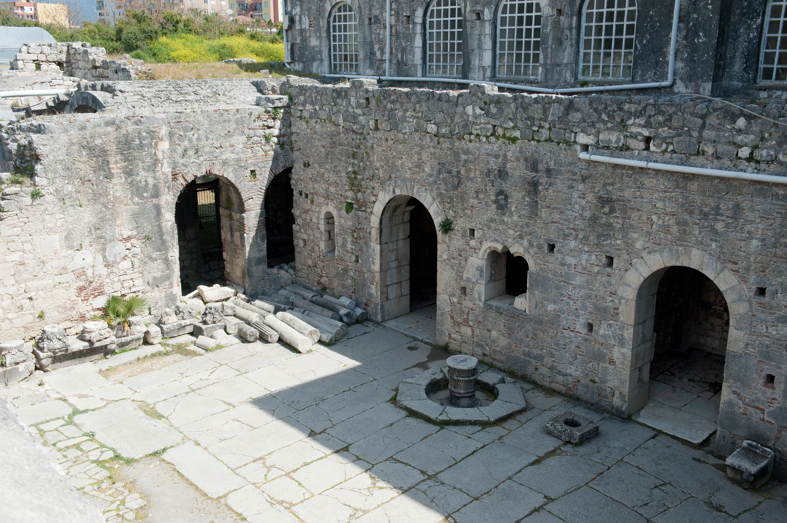
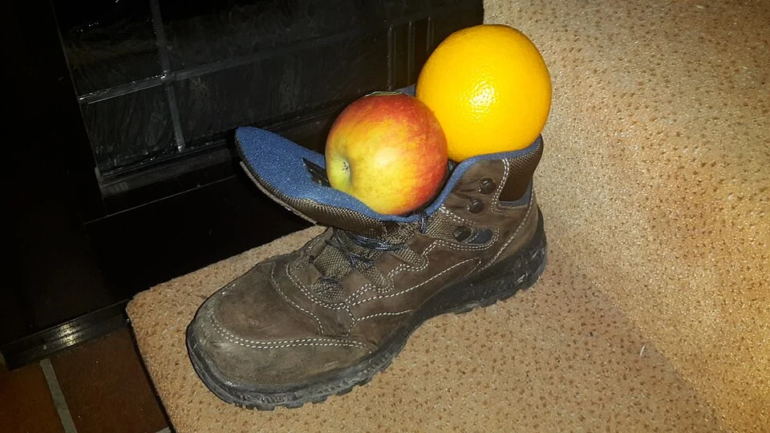

아직 펼치지 않은 카드
아직 펼치지 않은 카드
성탄을 기다리는 날들 · 2성 니콜라오산타클로스가 되기 전, 그는 누구였을까요?산타 할아버지 이야기는 이 사람에게서 시작됐대. 누구일까?
4세기 · 1087년미라(오늘의 튀르키예 뎀레) · 이탈리아 바리
성 니콜라오
4세기, 지금의 튀르키예 땅 미라에 니콜라오라는 주교가 있었어요. 몇백 년 뒤 적힌 그의 전기에는, 밤에 가난한 집 창문으로 금 주머니를 던져 넣은 이야기가 나와요. 어두운 그 방을 등불로 비춰, 몰래 다녀간 사람을 찾아보세요.
아주 옛날, 깜깜한 밤에 가난한 집 창문으로 금 주머니를 몰래 던져 준 사람이 있었대. 불빛으로 비춰서 찾아볼까?
검수 전 시안이에요(기준서 1판). 니콜라오의 선물 이야기는 그가 세상을 떠나고 몇백 년 뒤에 처음 적힌 전해지는 이야기라고 밝혔어요. 상상은 ‘눈 감고 상상해 보기’에만 썼어요.
시안 확인용카드 단계 미리 보기
1
미라의 주교
니콜라오는 4세기 리키아 지방의 항구 도시 미라의 주교였어요. 미라는 지금 튀르키예 남쪽 바닷가의 뎀레예요.
오늘 전해지는 그의 이야기는 대부분 그가 세상을 떠나고 몇백 년 뒤에 적혔어요. 지금 남은 가장 오래된 전기는 수도원장 미카엘이 쓴 『니콜라오의 생애』예요. 미카엘은 더 옛날의 글과 사람들 사이에 전해 오던 이야기를 모아 썼다고 해요.
하얀 수염 할아버지는 아주 옛날 바닷가 도시의 주교였대.
물어보기아주 오래된 이야기는 어떻게 지금까지 전해졌을까?
2
셋째 날 밤
미카엘의 전기에 이런 이야기가 있어요. 이웃의 한 사람이 큰 부자였다가 가난해져, 세 딸을 지킬 수 없는 처지가 되었어요.
니콜라오는 밤에 그 집 창문으로 금 주머니를 던져 넣고, 얼굴을 보이지 않은 채 서둘러 돌아갔어요. 아버지는 새벽에 그 금을 찾아 맏딸을 시집보냈어요. 얼마 뒤 같은 창문으로 두 번째 주머니가 들어왔고, 둘째 딸도 시집을 갔어요.
아버지는 그다음 밤부터 잠들지 않고 기다렸어요. 누가 이 금을 주었는지 알고 싶었거든요.
어두운 밤이에요. 손가락이나 마우스로 문질러 등불로 비춰 보세요.

비치 디 로렌초, 「지참금을 주는 성 니콜라오」, 1433~35년, 뉴욕 메트로폴리탄 미술관 · 그림: 비치 디 로렌초 · 퍼블릭 도메인 · 위키미디어 공용(메트로폴리탄 미술관)
빛이 닿으면 숨은 표시가 나타나요.
셋째 날 밤, 금 주머니가 떨어지는 소리가 나자 아버지는 뛰어나가 니콜라오를 따라잡았어요. 그 발아래 엎드려 고마워하자, 니콜라오는 그를 일으켜 세우고 이 일을 아무에게도 말하지 않겠다는 약속을 받았어요.
그림은 1433~35년 피렌체의 화가 비치 디 로렌초가 그렸어요. 화가는 세 밤의 이야기를 한 장면에 모아, 금 주머니를 둥근 금빛 공으로 그렸어요.
깜깜한 밤, 누가 창문으로 금 주머니를 던졌어! 불빛으로 비춰서 찾아볼까?
물어보기왜 얼굴을 보이지 않고 몰래 주었을까?
3
미라에서 바리로
니콜라오가 묻힌 곳 가까이에 교회가 세워졌다고 전해져요. 오랜 세월 둘레 땅이 높아져서, 지금은 옛 교회를 위에서 내려다봐요.
1087년 봄, 안티오키아에서 돌아오던 이탈리아 바리의 배 세 척이 미라에 들렀어요. 수도자들이 말렸지만, 선원들은 무덤을 열고 그의 뼈를 배에 싣고 떠났어요. 5월 9일 배가 바리에 닿자, 사람들이 항구로 몰려나와 맞았어요.


선원들은 그를 위해 큰 성당을 짓겠다고 다짐했어요. 1089년 10월, 교황 우르바노 2세가 새 성당 지하 경당의 제단 아래에 그의 뼈를 모셨어요. 바리는 지금도 해마다 5월 7~9일에 이 일을 기념해요.
아주 옛날 이탈리아 사람들이 배를 타고 와서 니콜라오의 뼈를 바다 건너로 모셔 갔대.
물어보기사람들은 왜 그렇게 멀리까지 모셔 가고 싶었을까?
4
12월 5일 밤의 장화
밤에 몰래 다녀간 선물 이야기는 유럽 곳곳의 풍습이 되었어요. 독일에서는 니콜라오 축일 전날인 12월 5일 저녁, 아이들이 장화나 신발을 문밖에 내놓아요. 장화 대신 접시를 내놓는 지방도 있어요.
6일 아침이면 그 안에 귤이나 견과, 초콜릿 같은 작은 선물이 들어 있어요.

12월 5일 밤, 우리 집이라면 문밖에 무엇을 내놓을까요?
12월 5일 밤에 장화를 문밖에 두면, 아침에 귤이랑 초콜릿이 들어 있대!
물어보기너라면 누구의 장화에 무엇을 몰래 넣어 주고 싶어?
눈 감고 상상해 보기
추운 밤, 골목은 조용해요. 창살 사이로 묵직한 것이 툭 떨어지는 소리. 방 안에서 누군가 벌떡 일어나요. 문을 열고 달려 나가자, 어둠 속에서 한 사람이 걸음을 멈춰요. 숨이 하얗게 피어올라요.
눈을 감아 봐. 깜깜한 밤, 툭! 창문으로 무언가 떨어졌어. 아빠가 문을 열고 뛰어나가. 누구일까?
나의 자리
누가 알아주지 않아도 건넨 선물이 있나요? 이름 모를 누군가에게 받은 선물은요?
몰래 누군가를 기쁘게 해 줄 수 있다면, 누구에게 무엇을 주고 싶어?
마음에 닿는 한 줄을 고르거나 직접 써 보세요. 한 줄을 남기면 이 자리의 도장이 찍혀요. 이 기기에만 저장돼요.
더 깊이
궁금한 칸만 펼쳐 읽어도 괜찮아요.
알고 보면
미카엘의 『니콜라오의 생애』 지금 남은 가장 오래된 니콜라오 전기예요. 지참금 이야기는 이 책의 10~17장에 있어요. 니콜라오는 세 번 모두 같은 창문으로 금 주머니를 던졌어요.
이 그림 1433~35년 피렌체의 한 수도원 제단화 아랫단(프레델라)으로 그려졌어요. 1425년 젠틸레 다 파브리아노가 그린 제단화를 본보기로 삼았어요(메트로폴리탄 미술관).
바리의 선원들 이탈리아 미술 잡지 「피네스트레 술라르테」는 62명의 선원이 배 세 척으로 뼈를 옮겼고, 5월 9일은 일요일이었다고 전해요. 뼈는 처음에 산 베네데토 수도원장 엘리아에게 맡겨졌어요.
기록마다 다른 점
전기를 쓴 때 미카엘의 전기를 8세기 초(710~720년 무렵)에 쓴 것으로 보는 자료도 있고, 9세기 전반(814~842년)으로 보는 자료도 있어요.
금 주머니와 금빛 공 기록에는 ‘금 주머니’라고 적혀 있어요. 이 그림과 젠틸레 다 파브리아노의 그림은 둘 다 둥근 금빛 공으로 그렸어요.
첫 무덤은 어디? 2024년 12월, 뎀레의 성 니콜라오 교회 남쪽 마당 곁 건물에서 길이 2미터쯤 되는 돌관이 나왔어요. 발굴단은 이곳이 그의 무덤 자리일 가능성이 커졌다고 보지만, 아직 단정하기는 이르다고 했어요.
함께 읽는 말씀
말씀은 뜻만 옮기고, 본문은 대한성서공회 개역개정으로 이어 드려요.
마태복음 6장 3~4절 남을 도울 때에는 오른손이 하는 일을 왼손이 모르게, 숨어서 하라는 예수의 말씀이에요.
등불로 찾기 금박
어두운 방의 다섯 곳을 모두 비춰 찾으면 카드에 금박이 입혀져요.
어두운 방의 다섯 곳을 모두 비춰 찾기
12월 5일 밤 채색
둘 가운데 하나만 해도 카드가 채색돼요.
우리 집이라면 12월 5일 밤 문밖에 무엇을 내놓을지 고르기
아이와 함께 ‘영화처럼 보기’를 끝까지 보기
근거 보기 (8)
- St Nicholas Center: 미카엘의 『니콜라오의 생애』 영어 번역 — 가장 오래된 전기, 10~17장 세 번의 밤, 아버지가 알아봄, 비밀 약속, 쓴 때(8세기 초)
- St Nicholas Center: 바리의 성인 — 1087년 안티오키아에서 돌아오던 배 세 척, 수도자들의 만류, 5월 9일 도착, 성당을 짓겠다는 다짐, 1089년 지하 경당, 5월 7~9일 축제
- Finestre sull’Arte: 바리와 풀리아의 성 니콜라오 — 62명의 선원, 배 세 척, 1087년 5월 9일 일요일, 엘리아 수도원장, 1089년 10월 우르바노 2세
- 메트로폴리탄 미술관: 비치 디 로렌초 「지참금을 주는 성 니콜라오」 — 1433~35년, 프레델라, 젠틸레 다 파브리아노 본보기, 퍼블릭 도메인
- 슈투트가르터 차이퉁: 왜 니콜라오에게 장화를 내놓을까 — 12월 5일 저녁, 접시를 내놓는 지방, 6일 아침 귤·견과·초콜릿
- Daily Sabah(아나돌루 통신), 2024.12.6: 뎀레 성 니콜라오 교회 발굴과 돌관 — 1989년부터 발굴, 아직 단정 이름
- 위키미디어 공용: 뎀레 성 니콜라오 교회 사진 설명 — 땅이 높아져 둘레에서 내려다봄
- 대한성서공회 개역개정: 마태복음 6장
그림·사진·소리 출처
‘처음 만나는 기독교 문화’의 깊은 카드예요. 실제 인물의 사진은 쓰지 않았어요. 카드 단계와 남긴 글은 이 기기에만 저장돼요.